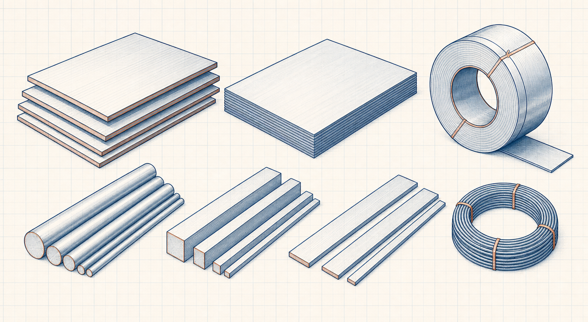

Product-dimensions reference guide
Carbon Steel Plate Thickness and Weight Table
Carbon Steel Plate Thickness and Weight Table is a source-governed Engineering Reference Data guide for product dimensions, mass, gauges and standard product forms. It explains what must be identified, verified and recorded before a numerical value or table entry is used in engineering work.

- Content type
- Product-dimensions reference guide
- Level
- Engineering Reference Data › Plates, Sheets, Bars, Rods and Wire › Plates and Sheets › Carbon Steel Products › Carbon Steel Plate Thickness and Weight Table
- Data status
- Source verification required before numerical publication
- Last reviewed
- 30 August 2026
What Does This Reference Cover?
Carbon Steel Plate Thickness and Weight Table is a source-governed Engineering Reference Data guide for product dimensions, mass, gauges and standard product forms. It explains what must be identified, verified and recorded before a numerical value or table entry is used in engineering work.
Reference-Data Publication Status
A reference value is only meaningful when its source, edition, revision, material or product basis, units, test conditions and scope are known. This guide directs the reader to verify those controls before using values in a calculation, drawing, specification or procurement decision.
Key Terms and Definitions
- Carbon Steel Plate Thickness and Weight Table
- The specific reference-data subject defined by this page title.
- Carbon Steel Products
- The approved Level 4 reference topic used to organise this guide.
- Plates and Sheets
- The Level 3 reference collection that establishes the immediate context.
- Controlled source
- A traceable source with publisher, title, edition, revision, date and applicable scope recorded.
Reference Verification Method
- Identify the exact material, product, component or dimensional subject required.
- Locate the governing source and record its publisher, title, edition, revision and publication date.
- Confirm the value’s units, conditions, product form, test basis and stated scope.
- Check that the source applies to the project specification and actual service.
- Record the verifier, review date and any conversion or interpretation before project use.
Controls Before Using Reference Data
Identification
the exact product standard, nominal versus actual dimension and tolerance basis
Basis and conditions
material density, length basis, coating or finish and applicable mass convention
Project application
supplier availability, mill practice and the drawing or purchase specification
Illustrative Reference Check
Hypothetical example — not a project value
An engineer needs a dimensional or property value for a purchase specification. Rather than copying an undated web table, the engineer identifies the governing standard edition, verifies the product form and unit basis, records the source and has the reference checked before use.
Engineering Applications
- Preparing a controlled reference basis for Carbon Steel Plate Thickness and Weight Table.
- Checking drawing, calculation, procurement and supplier data for consistency.
- Identifying the source and verification details needed before project use.
Common Mistakes and Limitations
- Mixing values from different editions, standards, unit systems or product forms.
- Using nominal dimensions or properties without confirming the required tolerance or test basis.
- Treating a general reference guide as a substitute for the governing project specification.
Frequently Asked Questions
Why are numerical tables not shown yet?
The site must publish only traceable and independently checked data. Numerical values will be added after their source, edition, scope, units and verification record are approved.
Can this page be used for procurement or fabrication now?
Use it to identify what must be verified. For a project decision, use the governing current standard, approved specification and supplier documentation.
Can different standards be treated as exact equivalents?
No. Grade and dimensional cross-references may be approximate or conditional. Verify the actual standard, product form and project requirements before substitution.
Expanded reference guide
Carbon Steel Plate Thickness and Weight Table: scope, identification and controlled use
Carbon Steel Plate Thickness and Weight Table is a source-governed Engineering Reference Data guide for product dimensions, mass, gauges and standard product forms. It explains what must be identified, verified and recorded before a numerical value or table entry is used in engineering work. This is a plate, sheet, bar, rod or wire reference. It is intended to help a visitor identify the information that must be confirmed before a dimension, property, designation, mass or table entry is used in design, procurement, fabrication, inspection or maintenance.
Do not treat a web reference as an approved project table. The user must establish product form, nominal dimension, thickness or gauge system, mass basis, material grade, delivery condition, tolerance, surface condition, traceability and the applicable product standard. Numerical information must remain traceable to the applicable standard, manufacturer document, material certificate, controlled drawing or project specification.
Identify the reference correctly
Item identity
Record the complete designation, product form, size series, grade, condition and any suffix that changes meaning or applicability.
Basis and units
Confirm the unit system, datum, temperature or pressure condition, nominal versus actual value and rounding rule before comparison.
Source control
Use the current approved edition or supplier record; retain document number, revision, issue date and page or table reference.
Project fit
Check that the value is compatible with the project specification, code, material class, service environment and fabrication method.
Practical use sequence
- Identify the equipment, component or material and the decision that the reference must support.
- Confirm the full designation and distinguish nominal size, catalogue value, design dimension, actual measured value and tolerance.
- Check the applicable source edition, national or international standard, project specification and supplier documentation.
- Verify units, reference conditions, temperature effects, material state and any conversion factor before using a value.
- Compare the entry with interfacing components, pressure or load condition, fabrication method, corrosion allowance and inspection requirement.
- Record the source, version, selection basis, calculation inputs and limitations in the project or maintenance record.
- Obtain competent review where the item affects containment, safety, structural capacity, code compliance or critical performance.
Selection, procurement and inspection context
Selection should not be based on one dimension or a familiar designation alone. Confirm fit-up, compatibility, tolerance, availability, manufacturing route, test requirements, traceability, coating or surface condition, storage and installation method. Where an item interfaces with another standard system, verify both sides of the connection before releasing a purchase or fabrication instruction.
At receipt or inspection, compare the actual marking, certificate, quantity, dimensions and condition with the controlled requirement. Segregate unidentified, damaged, mixed or out-of-tolerance material until its status is resolved. Use calibrated instruments and suitable sampling where measurement is required.
Data quality and limitation checks
Reference data can be misleading when a value is copied without its qualification. Common examples are nominal values treated as minimums, gauge systems confused with physical thickness, mass treated as force, standard dimensions applied to a different series, and temperature-dependent properties used outside their stated range.
When a table has incomplete context, obtain the primary source rather than estimating a critical value. Document uncertainty, avoid false precision and use an approved calculation or specialist review when the consequence of error is material.
Frequently asked questions
What should be established first?
Establish the actual boundary, service condition, required decision and governing case before using Carbon Steel Plate Thickness and Weight Table.
Which data are essential?
Use current drawings, controlled records, representative measurements, relevant material or fluid information and the applicable project or standard basis.
Why is normal operation not enough?
Start-up, shutdown, minimum, maximum, maintenance, upset and future cases can reveal different controlling limits.
How should the result be verified?
Compare the reference value with independent inspection, calibrated measurements, current supplier information and the documented operating condition.
When is a repeat review needed?
Repeat the review after a material, load, configuration, equipment, control, route, standard or operating-procedure change.
Can this page approve final project work?
No. Final design, procurement, safety, code and compliance decisions require current project information and qualified professional review.
What should be retained in the record?
Retain sources, versions, assumptions, units, calculations, limitations, review actions and field-verification evidence.
How should uncertainty be handled?
Identify uncertainty explicitly, test important sensitivities and avoid reporting more precision than the input evidence supports.
Why involve operations and maintenance?
They identify practical limitations involving access, isolation, reliability, cleaning, availability and actual equipment behaviour.
What is a common error?
Mixing incompatible conditions, units, source revisions or boundaries is a common cause of misleading engineering conclusions.
What should follow implementation?
Confirm performance against the documented basis, close outstanding actions and reassess the conclusion if field evidence differs from expectation.
Source-governed use
Verification before using a reference value
Before entering a table value into a design, fabrication, inspection or procurement document, confirm the source edition, full item designation, unit system, reference condition and applicable tolerance. A value copied from an uncontrolled summary may be unsuitable even when the number appears familiar. Retain the primary-source reference so the selection can be checked later.
Reference-data quality checks
- Distinguish nominal, minimum, maximum, average, calculated and actual measured values.
- Check whether the source applies to the required material grade, product form, heat treatment, dimensional series, pressure class or service condition.
- Use controlled conversions and retain adequate significant figures until the final presentation.
- Confirm interfaces with mating components, fabrication methods, test requirements and project specifications.
- Escalate values affecting safety, pressure containment, structural capacity, statutory compliance or critical performance for competent review.
Where the controlled source is unavailable, record the gap rather than inventing a missing value or implied tolerance. Obtain the applicable standard, manufacturer information or qualified review before release of work that depends on it.
Controlled application
Use in calculations, specifications and records
When a value from this reference is used in a calculation, state the source alongside the input and preserve the original unit. Use a controlled conversion only where necessary, show the selected value and any tolerance or allowance, then round the final presented result appropriately. This makes the calculation reviewable and prevents a copied number from losing its engineering context.
In a specification or purchase document, write the full required designation rather than a shortened informal name. Include applicable standard, material grade, dimensions, tolerances, test or certification requirement, surface or coating condition, quantity and any compatibility requirement with connected parts. Resolve differences between this educational guide and the controlled project requirement in favour of the latter.
For inspection, compare the actual component or material against its marking, certificate, approved drawing and permitted tolerance. Do not accept a substitute solely because it appears similar. Substitution can alter fit, strength, pressure capability, corrosion behaviour, welding response, temperature limit or traceability. Record the verification route so that future maintenance or modification work can identify what was installed.
References
- AISC. Steel Construction Manual. American Institute of Steel Construction.
- ASM International. ASM Handbook. ASM International.
This original guide does not reproduce protected standards, data tables, figures or proprietary supplier information.